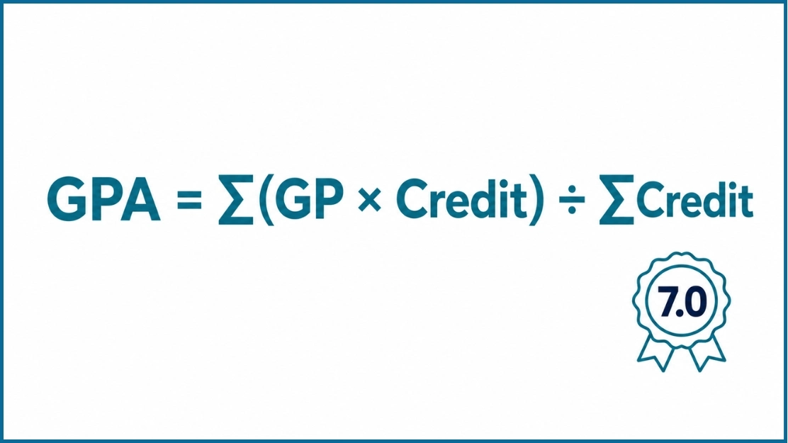

CGPA Calculator Australia (Australian 7-Point GPA)
CGPA Calculator
Target CGPA
SGPA → CGPA
What Is an Australian CGPA Calculator?
An Australian CGPA calculator turns your subject grades and credit points into a credit-weighted grade point average on the 7-point scale. Enter your results semester by semester to see each semester's GPA and your cumulative GPA, then use the target planner to see what you need next.
Is CGPA the Same as GPA in Australia?
Australian universities report Grade Point Average (GPA). CGPA stands for cumulative GPA, your average across every semester completed, and the Overall CGPA figure in the calculator is exactly that. Students from countries where CGPA is the usual term often search for it, but your transcript or student portal will say GPA.
Some universities do not print a cumulative figure on the academic record at all. Monash University, for example, issues a CGPA as a letter on request.
How to Use the Australian CGPA Calculator
The calculator above does three jobs. Follow the steps for the one you need.
Step 1: Add your subjects. Under Semester 1, type the subject name (optional), enter its credit points from your enrolment record, and pick the grade: HD, D, CR, P or F.
Step 2: Add more subjects and semesters. Press Add Course for each extra subject and Add Semester for each new teaching period. Every semester shows its own SGPA, and Overall CGPA shows your cumulative GPA.
Step 3: Start from semester GPAs instead. If you only know each semester's GPA, use the SGPA → CGPA table and enter the SGPA with that semester's total credit points.
Step 4: Plan a target. In the Target CGPA box, enter your target and the credit points you have left. The Required GPA is the average you need across those remaining credits.
Step 5: Keep a copy. Press Download Report to save every semester, subject and GPA in one report.
Australian Universities That Use a 7-Point GPA Scale
These universities publish GPA on a 7-point scale where a High Distinction is worth 7, so this calculator matches their method.
Not on this list? Monash University calculates GPA on a 4.0 scale (HD 4.0, D 3.0, CR 2.0, P 1.0). The University of Melbourne, UNSW Sydney, the University of Sydney and the University of Wollongong use a Weighted Average Mark (WAM) instead of GPA, and Macquarie University replaced GPA with WAM for students admitted from 2020. If your university does not use the 7-point scale, treat the result here as an unofficial estimate and check your university's own GPA policy.
What Is GPA in Australia?
GPA stands for Grade Point Average. It converts each subject result into a grade point and averages those points, weighted by credit points, so a subject worth more credits moves your GPA further than a smaller one.
Most universities recalculate GPA at the end of every teaching period. Some print it on the transcript. Others report WAM as the main figure and only work out a GPA when an exchange program, scholarship or application asks for one.
Grade point values and the rules for failed, withdrawn and repeated subjects are set by each university. This calculator follows the common 7-point scale.
Australian 7-Point GPA Scale: Grades and Grade Points
Each grade maps to a number, and your GPA depends on two things: the grade point you earned and the credit points the subject carries.
| Grade | Meaning | Typical Mark | Grade Point |
|---|---|---|---|
| HD | High Distinction | 85-100 | 7 |
| D | Distinction | 75-84 | 6 |
| CR | Credit | 65-74 | 5 |
| P | Pass | 50-64 | 4 |
| F | Fail | 0-49 | 0 in this calculator |
The mark bands are the common ones, and universities set their own. Federation University Australia, for example, starts HD at 80 and D at 70.
How Fail Grades Are Counted
This calculator counts a fail as 0, and that matches some universities, including Charles Sturt University. Others give fail results a value above 0. Griffith uses fail grades of 1, 2 and 3 on its 7-point scale and counts a fail for no assessment submitted as 0. QUT counts a withdrawn fail as 1, and Federation University counts a fail as 1.5. If your fails carry a value above 0, your official GPA will be a little higher than the calculator shows.
Administrative results such as withdrawn, not assessed or non-graded pass are handled differently at each university, and many are left out of GPA entirely. Leave them out unless your policy says to count them.
What Do the Grades Mean?
High Distinction (HD) is the top grade, worth 7 points. It marks outstanding work and a deep grasp of the material.
Distinction (D) is worth 6 points and reflects strong knowledge, critical thinking and well-developed analysis.
Credit (CR) is worth 5 points, for above-average work that clearly meets the learning outcomes.
Pass (P) is worth 4 points. You met the minimum requirements and completed the subject.
Fail (F) means the required outcomes were not met. It pulls your GPA down and still counts toward your credit points.
Australian GPA Formula

Universities on the 7-point scale calculate GPA with this formula:
Doing this by hand across several semesters is slow and easy to get wrong, which is why a calculator helps.
Understanding the Formula
Credit points are the weight of each subject. Many universities use subjects of 6, 12 or 24 credit points, while Charles Sturt University uses 8, 16 and 32. Always copy the figure from your own record.
Grade value is the number behind each letter grade: HD = 7, D = 6, CR = 5, P = 4.
Weighted grade points are the grade value multiplied by the credit points. A Distinction (6) in a 6-credit-point subject gives 6 × 6 = 36. Add these up across all subjects, then divide by total credit points.
Manual GPA Calculation Example
Here is the formula with real numbers for Semester 1.
| Subject | Credit Points | Grade | Grade Point | Weighted Points |
|---|---|---|---|---|
| Introductory Accounting | 6 | HD | 7 | 42 |
| Corporate Finance | 6 | D | 6 | 36 |
| Consumer Behaviour | 6 | CR | 5 | 30 |
| Business Strategy | 6 | P | 4 | 24 |
| Macroeconomics | 6 | HD | 7 | 42 |
| Total | 30 | - | - | 174 |
Semester 1 GPA = 174 ÷ 30 = 5.80
Now add Semester 2: four 6-credit-point subjects graded D, D, CR and HD. The weighted points are 36 + 36 + 30 + 42 = 144 across 24 credit points, so the Semester 2 GPA is 144 ÷ 24 = 6.00.
Cumulative GPA = (174 + 144) ÷ (30 + 24) = 318 ÷ 54 = 5.89
Averaging the two semester GPAs would give 5.90. The gap appears because Semester 1 carried more credit points, which is why cumulative GPA must be weighted by credit points and not averaged by semester.
How to Work Out the GPA You Need for a Target
The Target CGPA box in the calculator uses this formula:
Say your current CGPA is 5.20 over 48 completed credit points, you want to finish on 5.50, and you have 48 credit points left. Total credits are 96, so the required GPA is (5.50 × 96 - 5.20 × 48) ÷ 48 = 278.4 ÷ 48 = 5.80. You would need roughly a Credit-to-Distinction average from here.
If the required GPA comes out above 7, the target cannot be reached with the credit points you have left. A lower target or more remaining credits would be needed.
Why Your GPA Matters
Universities use GPA to select students for prizes and scholarships, to award honours or pass with distinction, and to decide eligibility for research programs. It also sets minimum entry requirements for postgraduate study and for moving to another university.
Some graduate employers and exchange programs ask for academic results too. If your university mainly reports WAM, it is still worth knowing your GPA, because many applications request it.
GPA vs WAM: What Is the Difference?
GPA and WAM both summarise your results, but they measure them differently. GPA turns each grade into a point value on a 0 to 7 scale. WAM works directly from your percentage marks, weighted by credit points, with no grade points involved.
Two students who score 84 and 76 both earn a Distinction and 6 grade points, yet their WAMs differ. That is why a GPA and a WAM never match exactly.
| Feature | GPA | WAM |
|---|---|---|
| Full Meaning | Grade Point Average | Weighted Average Mark |
| Based On | Grade points | Percentage marks |
| Typical Scale | 0-7 | 0-100 |
| Common Uses | Scholarships, exchange programs, entry to other universities | Transcripts, honours and course requirements at WAM universities |
To work out a WAM from your marks, the Weighted Average Calculator uses the same credit-weighted method.
Can You Convert Australian GPA to a Percentage or 4.0 GPA?
There is no formula that converts an Australian GPA to a percentage at every university. A grade point covers a whole band of marks, so the original percentage cannot be worked back out of it.
Converting to a US-style 4.0 scale has no single official method either. Dividing by 7 and multiplying by 4 gives a rough estimate. Some institutions instead map 7, 6, 5 and 4 straight to 4.0, 3.0, 2.0 and 1.0, which gives a different answer for the same transcript. Ask the university or evaluator assessing your application which method it uses, and avoid unofficial conversion charts.
Applying to an Australian University With a CGPA From Another Country
Australian universities publish their own entry equivalencies for international grading scales. Macquarie University's postgraduate academic entry guide for international students, for example, lists them country by country. Use the table for your own country and the program you want.
This calculator does not convert a foreign score into an Australian GPA. If you need to work out your home-country result first, use the Bangladesh 4.00 CGPA calculator or the 10-point CGPA calculator. To move between scales or into a percentage, try the GPA and CGPA converter and the CGPA to percentage calculator.
What Is a Good GPA on the Australian 7-Point Scale?
A GPA of 6.0 or higher is a Distinction average and is generally seen as excellent. A GPA above 5.0, a Credit average, is a solid result at most universities.
A Credit average of 5.0 is a common reference point for honours and postgraduate coursework entry, and research pathways often ask for more. Requirements differ by university and program, so read the entry requirements for yours. For wider benchmarks, see the guide to a good CGPA.
Tips to Improve Your GPA
Raising your GPA comes from steady habits across semesters. For more ideas, read the guide on how to improve your CGPA.
Attend classes regularly. You pick up key concepts before assignments and exams arrive, so there are fewer gaps to fill later.
Put effort where credit points are high. A strong result in a 12-credit-point subject moves your GPA twice as far as the same result in a 6-credit-point subject.
Submit assessments on time. Late penalties cost marks you have already earned.
Use lecturer feedback. It shows what to fix in the next assessment.
Study weekly. Spreading study across the semester works better than cramming before exams.
Ask for help early. Talk to your lecturer, tutor or academic adviser as soon as a topic stops making sense.
Check your GPA every semester. Use the Target CGPA box to see what you need before it is too late to change the outcome.
Common GPA Calculation Mistakes
Entering the wrong credit points. This skews your GPA. Use the values on your transcript or enrolment record.
Leaving out failed subjects. A fail counts toward your GPA and your credit points, so include it.
Ignoring how your university values fails. This calculator uses 0 for F. If your university gives fails a value above 0, your official figure will be a little higher.
Mixing GPA and WAM. They are different measures and give different numbers. Do not enter percentage marks where a grade is expected.
Using the wrong scale. A 4.0 calculator will not give a correct GPA for a 7-point university, and this 7-point calculator will not suit a 4.0 university such as Monash.
Forgetting how repeats are handled. Some universities replace the old grade, others keep every attempt. Check your policy first.
Benefits of Using This Calculator
Fast Calculations
Every grade and credit point you enter updates your GPA and progress bar instantly.
Credit-Weighted GPA
Uses the credit-weighted formula that Australian universities publish for the 7-point scale.
Multi-Semester Support
Add as many semesters and subjects as you need. Each semester shows its own SGPA and the overall figure covers your whole record.
Downloadable Report
Save a report with every semester, subject and GPA for your own records.
Built for the 7-Point Scale
Set up with the HD, D, CR, P and F grades used at UQ, QUT, Griffith and other 7-point universities.
Free and Mobile Friendly
Works on any screen size, with no registration and no limit on calculations.
GPA and WAM Benchmarks in Australia
These are general patterns, not official policy. Confirm current requirements with your university. Last updated .
Frequently Asked Questions About the Australian CGPA Calculator
CGPA means cumulative GPA, your credit-weighted grade point average across every semester you have completed. Australian universities usually call it GPA and score it on a 7-point scale, where HD = 7, D = 6, CR = 5 and P = 4.
Multiply each subject's grade point by its credit points, add the results together, then divide by your total credit points. In formula form, GPA = total weighted grade points ÷ total credit points. The calculator above does this for every semester at once.
HD = 7, D = 6, CR = 5 and P = 4. This calculator counts F as 0, but some universities give failing grades a value above 0, so check your own grading policy.
The University of Queensland, QUT, Griffith University, James Cook University, Charles Sturt University and Federation University Australia all publish GPA on a 7-point scale. Monash University uses a 4.0 scale, and the University of Melbourne, UNSW Sydney and the University of Sydney rely on WAM.
On the 7-point scale, yes. You would need a High Distinction in every subject to reach it. On a 4.0 scale such as the one Monash uses, the highest GPA is 4.0.
On the 7-point scale, 6.0 or above is a Distinction average and is generally seen as excellent. A Credit average of 5.0 is a common reference point for honours and postgraduate entry, but each program sets its own requirement.
GPA converts each result into a grade point, such as 7 for HD, and weights it by credit points. WAM averages your actual percentage marks, also weighted by credit points. GPA treats every mark inside a grade band the same, so the two numbers will not match.
There is no single official formula. US universities and credential evaluators set their own method, and the methods give different results. Dividing by 7 and multiplying by 4 gives a rough estimate, while some institutions map 7, 6, 5 and 4 directly to 4.0, 3.0, 2.0 and 1.0. Ask the institution assessing your application which method it uses.
No standard formula exists. A grade point covers a whole range of marks, so your original percentages cannot be recovered from it. If an employer or institution asks for a percentage or WAM, request it from your university.
Yes. Failed subjects count toward your GPA and add to your total credit points. This calculator uses 0 for F. Griffith, QUT and Federation University give some fail results a value above 0, so your official GPA can be slightly higher than the result here.
It depends on the university. Some replace the earlier grade with the new one, while others include every attempt. QUT, for example, includes all attempts at a unit. Check your university's GPA policy before entering a repeated subject.
For a single semester, enter only that semester's subjects and read the SGPA. For cumulative GPA, add each teaching period as its own semester and read Overall CGPA. If you only have semester GPAs, use the SGPA → CGPA table with each semester's credit points.
Use the credit points shown for each subject on your transcript, enrolment record or handbook. Many universities use 6, 12 or 24 credit point subjects, while Charles Sturt University uses 8, 16 and 32. Wrong credit points will change your GPA.
Enter your current CGPA, completed credits, target CGPA and remaining credits in the Target CGPA box. The required GPA = (target × total credits - current CGPA × completed credits) ÷ remaining credits. If the answer is above 7, the target cannot be reached.
It depends on the university and faculty. Some set honours classes from WAM, commonly 80 or above for first class, while others use GPA on the honours component, as QUT does. Check your faculty's published requirements.
Yes, if your Australian university reports GPA on the 7-point scale, undergraduate, postgraduate coursework and international students can all use it. It does not convert grades from another country's scale into an Australian GPA.
Yes. There is no account and no fee, and you can use it as often as you like.